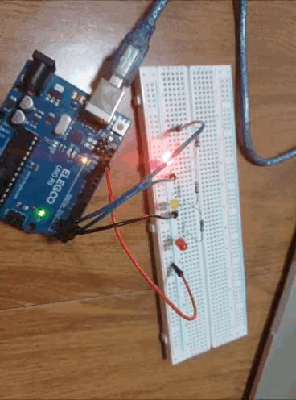
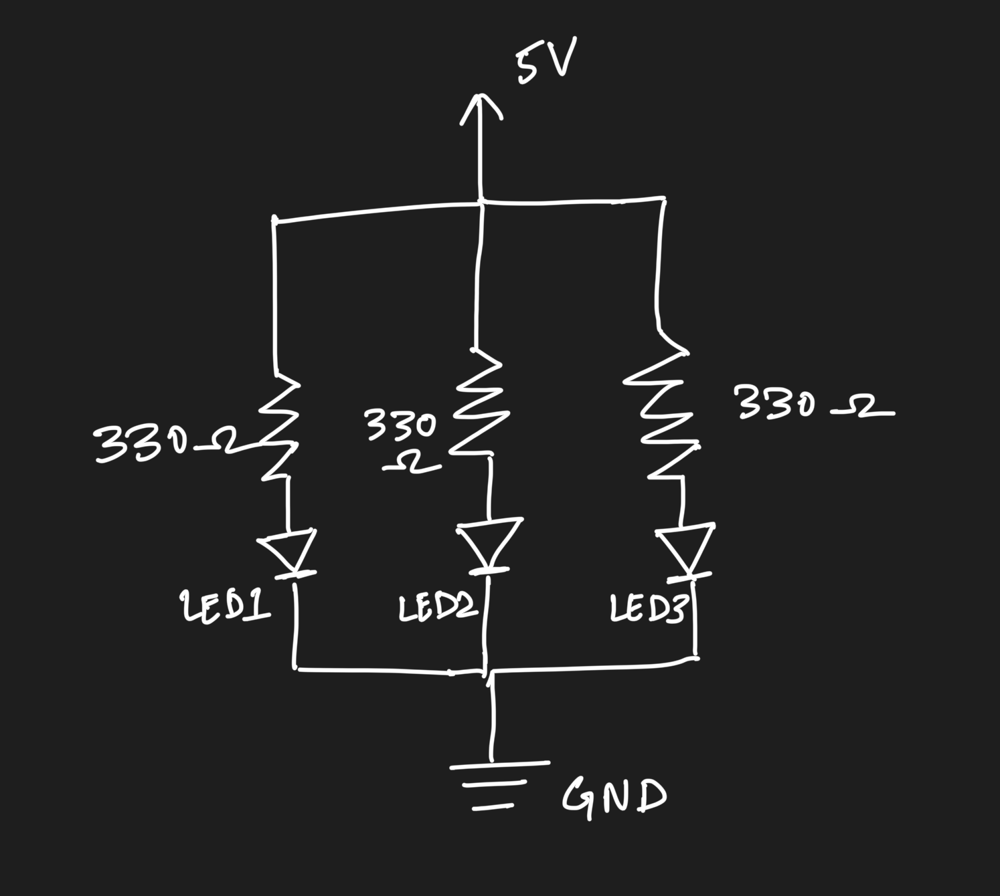
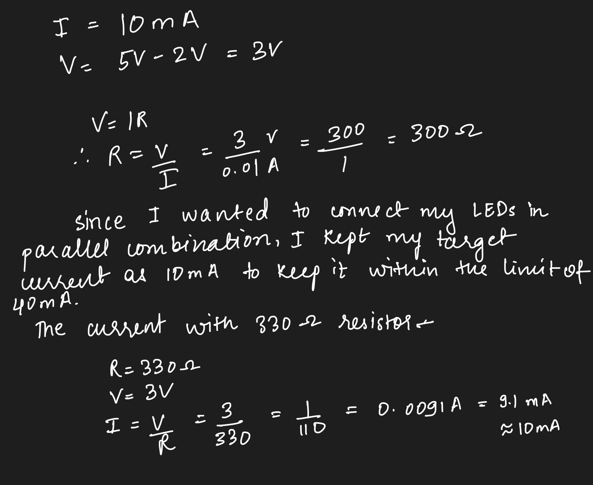
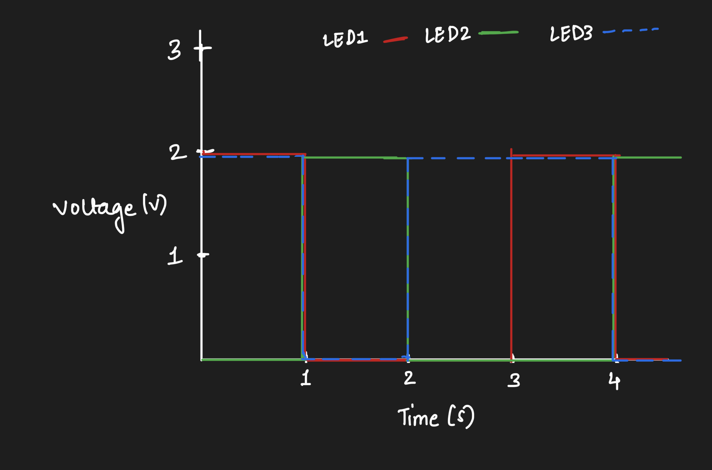

Here is all the documentation for assignment 1!
Schematic of Circuit

I chose to make a circuit with 3 LEDs - 2 red and one yellow - in parallel with each LED connected to its own 330 ohms resistor. I chose 330 ohm resistors to get the current to approximately 10 mA each. Since I was connecting 3 LEDs in parallel combination, the current would have added up. So, in order to keep the current less than 40 mA, I chose 330 ohms as the safest option. The caluclations are attached below.

Setup of the circuit

Arduino Code Snippet
void setup() {
// Set digital pin 4 as an output to control the first LED.
pinMode(4, OUTPUT);
// Set digital pin 3 as an output to control the second LED.
pinMode(3, OUTPUT);
// Set digital pin 2 as an output to control the third LED.
pinMode(2, OUTPUT);
}
// The loop function repeats the blinking pattern continuously.
void loop() {
// Turn on the first LED connected to pin 4.
digitalWrite(4, HIGH);
// Turn off the second LED connected to pin 3.
digitalWrite(3, LOW);
// Turn on the third LED connected to pin 2.
digitalWrite(2, HIGH);
// Keep this LED combination for 1 second.
delay(1000);
// Turn off the first LED connected to pin 4.
digitalWrite(4, LOW);
// Turn on the second LED connected to pin 3.
digitalWrite(3, HIGH);
// Turn off the third LED connected to pin 2.
digitalWrite(2, LOW);
// Keep this LED combination for 1 second.
delay(1000);
// Keep the first LED turned off.
digitalWrite(4, LOW);
// Keep the second LED turned off.
digitalWrite(3, LOW);
// Turn on the third LED connected to pin 2.
digitalWrite(2, HIGH);
// Keep this LED combination for 1 second.
delay(1000);
}
Animated Gif of circuit
QUESTIONS
Question 1:
